Your watch measures.
Ambrose explains.
Energy, food, training and how fast you're aging, worked out on your phone from what your watch already records, and said in plain words.
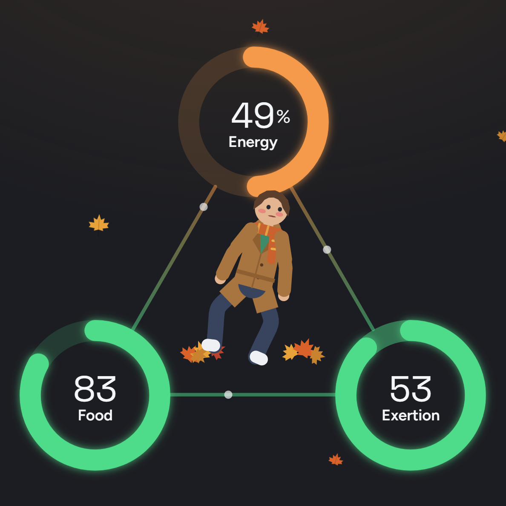
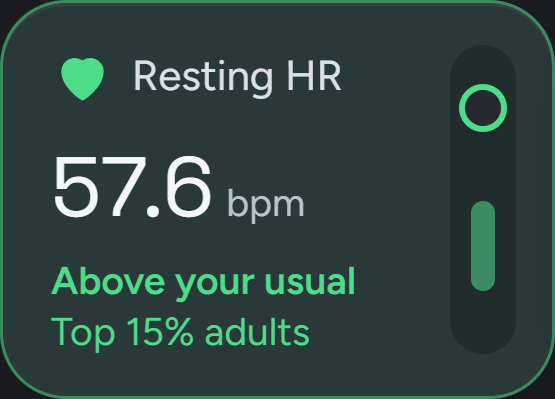
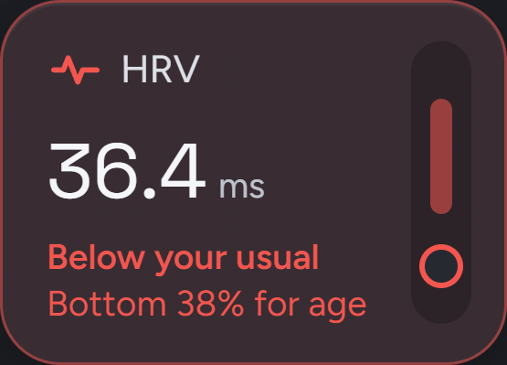
Know what you have left.
Your energy starts the day at last night's recovery and runs down as you go. Hard training and stressful hours take more; a nap or a quiet spell gives some back. Ambrose tells you in a sentence what moved it, and where you'll be by bedtime.
Eat for the long run.
Search a food, scan its barcode or pick a meal you eat often. Ambrose scores the day on what research ties to a longer life: vegetables, fruit, fibre, legumes, nuts and good fats, against red meat, sugar, salt and ultra-processed food.
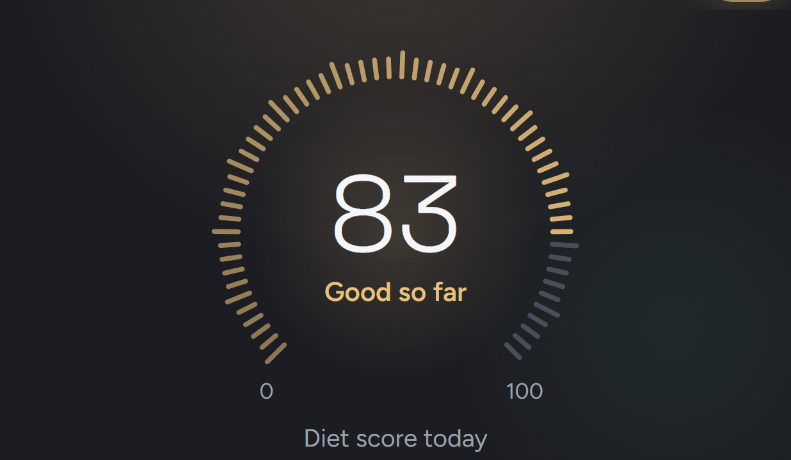
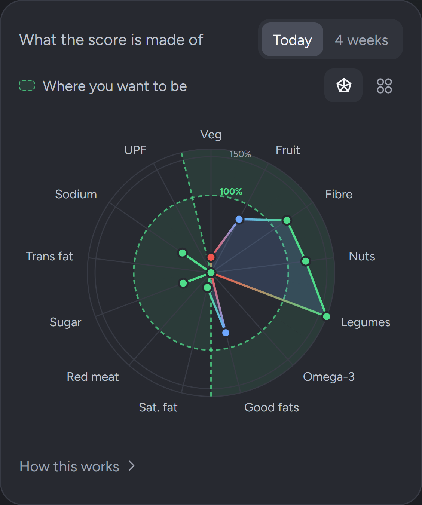
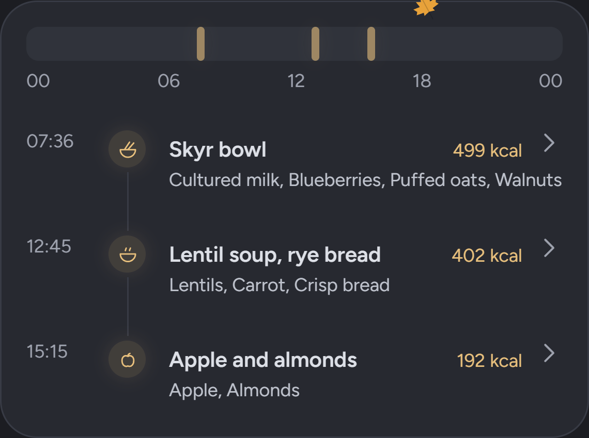
Find out what works for you.
Probe looks for links in your own days: sleep and the next day's mood, deep sleep and your HRV, a late coffee and your night. It says how sure it is, and only calls a link confirmed when your data holds it up.
Train hard on the right days.
Log a workout as you lift, and see your training load against the range that suits you now: building, holding or easing off. Thirty-day cards show the time you put in and where it went.
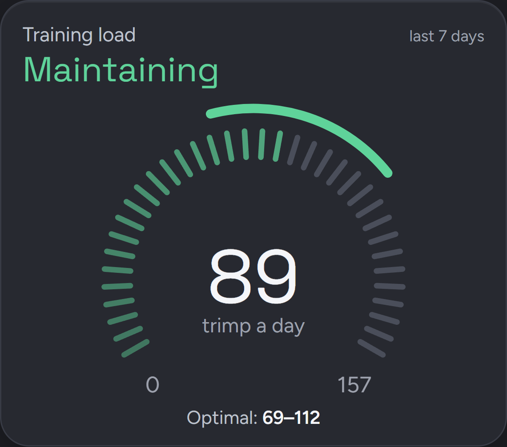
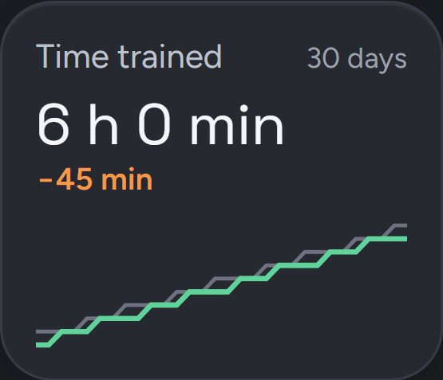
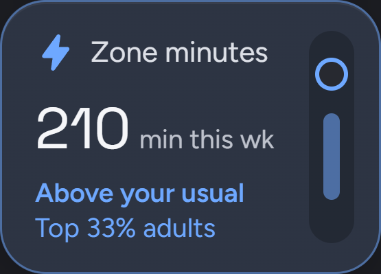
See how fast you're aging.
Your bio age comes from seven things your watch already knows, from resting heart rate and steps to sleep and cardio fitness, each weighed by how much it changes the risk of dying early. Your pace of aging says how fast it's moving.
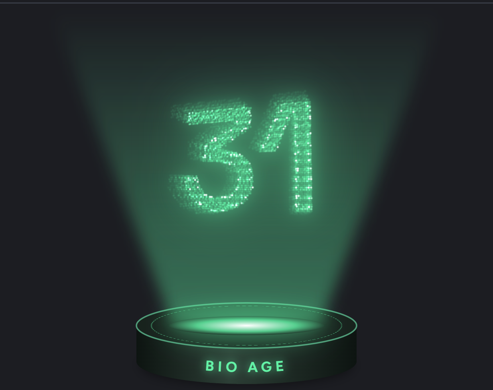
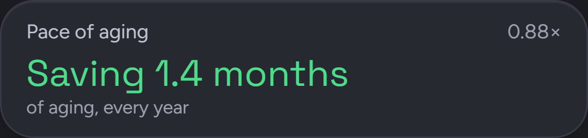
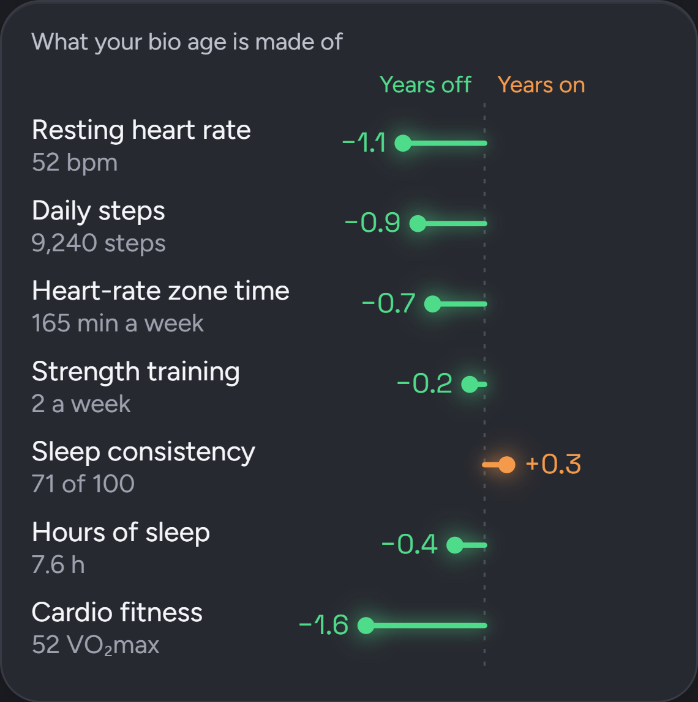
Your normal, not an average.
Each vital is read against your own usual range, so a change stands out the day it happens. Then against people your age, so you know where you stand.
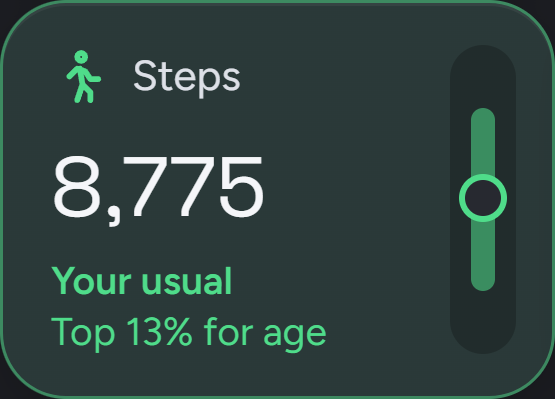
Dressed for the day.
The little astronaut at the heart of Launch changes with the seasons, and turns up for the days that matter: 17 May, Halloween, Christmas and more. Small things, slowly.
Every number has a source.
Nothing here is a black box. Each score is built from published research, and its method is written down.
Built from hazard ratios in large cohort studies, such as cardio fitness and daily steps, turned into years.1
Drains while you're awake at the rate of the two-process model of sleep regulation.2
Measured as Banister's training impulse, from your heart rate through each session.3
Built on the Alternative Healthy Eating Index, the diet score most tied to a longer life.4
- Kodama et al., JAMA 2009; Mandsager et al., JAMA Network Open 2018; Paluch et al., Lancet Public Health 2022.
- Daan, Beersma & Borbély, American Journal of Physiology 1984.
- Banister, Physiological Testing of the High-Performance Athlete, 1991.
- Chiuve et al., Journal of Nutrition 2012; Shan et al., JAMA Internal Medicine 2023.
Nothing to sign up for.
Ambrose reads Health Connect and does the rest on your phone. Something leaves it only when you use a feature that needs it.
No account
No sign-up and no Ambrose server holding your data. Uninstalling deletes Ambrose's copy.
AI only if you want it
Off by default. Turn it on with the AI service you choose, even one on your own computer.
Read-only
Ambrose never writes to Health Connect, and you can take any permission back there at any time.

Join the test.
Ambrose is in testing on Android, with a small group of people who wear a watch or ring every day. Testers get each new version the day it's made, and their feedback shapes what comes next.
Ask for an invite